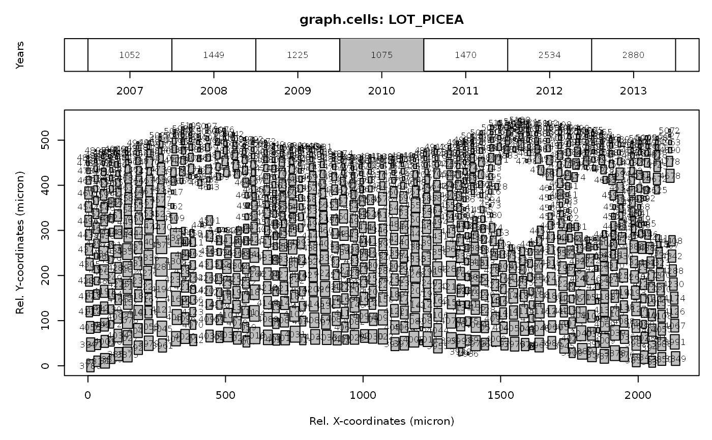

graph.cells.RdThis function uses is.raptor files to create a two panel plot including; 1) a schematic overview of the ring width sequence and 2) a graphical representation of the cell size and position within a specific year (highlighted in the ring width sequence).
graph.cells(input, year=FALSE, interact=FALSE)
| input | an |
|---|---|
| year | a numerical value specifying the year of interest. Default starts with the first year and plots the other years in sequence. |
| interact | a logical flag. If |
This graphical interface aids in exploring the cell position and cell size. The upper plot provides and overview of the available years within the data.frame. Grey shading indicates the year that is presented in the lower panel. The italic value in the upper panel presents the number of cells within the selected year. The lower panel shows the position of the cells with their unique "CID". XCAL and YCAL positions are standardized to the minimum occurring coordinates. Within the lower panel, the grey boxes represent the cells, derived from the lumen area ("CA") assuming a square. When "interact = TRUE", readline messages will be presented with multiple options to create a new plot while moving along the years (including selecting the previous, next year or selecting a specific year). Stopping the interact function is done by typing "x". Terminate this function before continuing with other functions.
#' #plotting example data input<-example.data(species="LOT_PICEA") input<-is.raptor(input, str=TRUE)#> 'data.frame': 11685 obs. of 7 variables: #> $ ID : Factor w/ 4 levels "LOT_PICEA","LOW_PINUS",..: 1 1 1 1 1 1 1 1 1 1 ... #> $ CID : int 31 32 34 40 45 50 53 56 57 59 ... #> $ YEAR : int 2007 2007 2007 2007 2007 2007 2007 2007 2007 2007 ... #> $ CA : num 1252 1136 1139 1320 1688 ... #> $ XCAL : num -1481 -1440 -1402 -1365 -1317 ... #> $ YCAL : num 108980 108979 108979 109000 109006 ... #> $ CWTALL: num 3.01 2.76 2.04 2.69 2.36 2.21 2.47 2.51 2.59 2.86 ... #> NULLgraph.cells(input, year=2010)